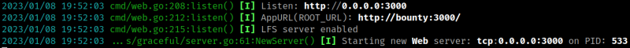

5.2 Gitea
Gitea is a forge software package for hosting software development version control using Git as well as other collaborative features. More info here.
1. Run “gitea” as “primavera” user.
hania@bounty:/$ cd /home/primavera
hania@bounty:/home/primavera$ sudo -u primavera ,/gitea
Note
If gitea gave you an error with “tcp 0.0.0.0:3000” reboot the victim's machine.
Output:

2. Browse to http://192.168.12.73:3000/.
3. Click on on the “Register” link and create a new account.